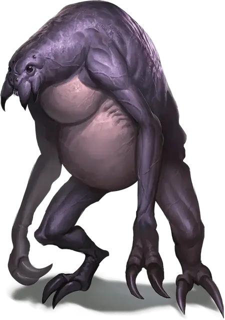

Эттеркап
Ettercap
Средний Монстр, нейтрально-злой

Класс Доспеха 13 (природный доспех)
Хиты 44 (8к8 + 8)
Скорость 30 футов, лазая 30 футов
| мод | спас | ||
|---|---|---|---|
| СИЛ | 14 | +2 | +2 |
| ЛОВ | 15 | +2 | +2 |
| ТЕЛ | 13 | +1 | +1 |
| мод | спас | ||
|---|---|---|---|
| ИНТ | 7 | −2 | −2 |
| МДР | 12 | +1 | +1 |
| ХАР | 8 | −1 | −1 |
Навыки Восприятие +3, Выживание +3, Скрытность +4
Чувства тёмное зрение 60 футов, пассивное Восприятие 13
Опасность 2 (450 опыта)
Бонус мастерства +2
Среда обитания Лес
Особенности
Паучье лазание. Эттеркап может лазать по сложным поверхностям, включая потолки, без совершения проверок характеристик.
Чувство паутины. Находясь в контакте с паутиной, эттеркап знает точное местоположение всех других существ, находящихся в контакте с той же паутиной.
Хождение по паутине. Эттеркап игнорирует ограничения перемещения, вызванные паутиной.
Разновидность: Паутинная удавка. Некоторые эттеркапы любят душить жертву, используя удавку, созданную из тонких нитей паутины. Эттеркап с таким оружием получает описанный ниже вариант действия, которое использует вместо атаки когтями.
Паутинная удавка. Рукопашная атака оружием: +4 к попаданию, досягаемость 5 футов, одно Среднее или Маленькое существо, бросок атаки по которому эттеркап совершает с преимуществом. Попадание: Дробящий урон 4 (1к4 + 2), и цель становится схваченной (Сл. высвобождения 12). Пока цель схвачена, она не может дышать, и эттеркап совершает броски атаки по ней с преимуществом.
Действия
Мультиатака. Эттеркап совершает две атаки: одну укусом, и одну когтями.
Укус. Рукопашная атака оружием: +4 к попаданию, досягаемость 5 футов, одно существо. Попадание: Колющий урон 6 (1к8 + 2) плюс урон ядом 4 (1к8). Цель должна преуспеть в спасброске Телосложения Сл 11, иначе станет отравленной на 1 минуту. Существо может повторять этот спасбросок в конце каждого своего хода, оканчивая эффект на себе при успехе.
Когти. Рукопашная атака оружием: +4 к попаданию, досягаемость 5 футов, одна цель. Попадание: Рубящий урон 7 (2к4 + 2).
Паутина (перезарядка 5–6). Дальнобойная атака оружием: +4 к попаданию, дистанция 30/60 футов, одно существо с размером не больше Большого. Попадание: Существо становится опутанным паутиной. Опутанное существо может действием совершить проверку Силы Сл 11, высвобождаясь из паутины при успехе. Эффект оканчивается, если паутина будет уничтожена. У паутины КД 10, 5 хитов, уязвимость к урону огнём, иммунитет к дробящему урону, урону психической энергией и ядом.
Описание
Эттеркапы похожи на человекоподобных пауков, которые, как правило, ухаживают за другими пауками, как пастух следит за стадом овец. Логова их расположены в глубинах тёмных лесов. Тонкие шёлковые нити, струящиеся из желёз в брюшной полости эттеркапа, позволяют ему ловить, опутывать и душить жертв. Также паутину используют для создания сетей и сложной системы ловушек, которые часто украшают их логова.
Тихие убийцы. Когда путешественники и исследователи отваживаются зайти на территорию эттеркапа, тот начинает красться за ними. Некоторые встречают свой конец, слепо забредая в ловушки или участки леса, окутанные паутиной. Других эттеркапы душат нитями паутины или отравляют укусом.
Лесные грабители. Хоть эттеркапы и обитают в дикой местности, они не желают жить в гармонии с природой. Лес, кишащий эттеркапами, превращается в мрачное место, задушенное паутиной и кишащее гигантскими пауками, насекомыми и другими зловещими хищниками. Существа, которые забредают слишком далеко в лес, вскоре теряются в лабиринтах из паутины, на которой висят кости и потерянные сокровища жертв эттеркапов.
Враждебность к феям. Эттеркапы — природные враги фейских созданий. Мерзкие твари расставляют сети, чтобы ловить спрайтов и пикси, которых они пожирают, и опутывают нитями деревья дриад в тщетных попытках поймать одну из них. Иногда запуганные феи прибегают к помощи посторонних для борьбы с нашествием эттеркапов, так как сами они не способны бороться со злобными тварями.